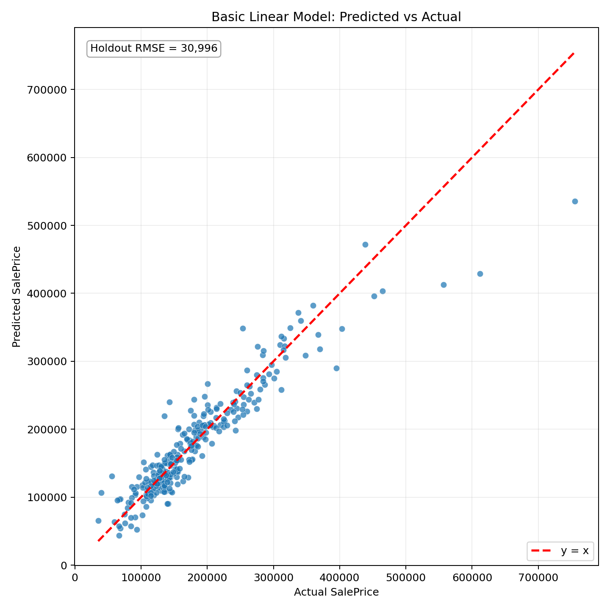

This basic model follows the course specification: use all available explanatory variables in a single multiple linear regression.
The housing group estimates:
y_i = beta_0 + beta_X X_i + beta_D D_i + U_iSalePrice.X_i: matrix of numerical house characteristics.D_i: matrix of dummy variables for categorical house characteristics.from sklearn.compose import ColumnTransformer
from sklearn.impute import SimpleImputer
from sklearn.linear_model import LinearRegression
from sklearn.model_selection import KFold, cross_val_score, train_test_split
from sklearn.pipeline import Pipeline
from sklearn.preprocessing import OneHotEncoder
preprocessor = ColumnTransformer([
("num", Pipeline([
("imputer", SimpleImputer(strategy="median")),
]), numeric_cols),
("cat", Pipeline([
("imputer", SimpleImputer(strategy="most_frequent")),
("onehot", OneHotEncoder(handle_unknown="ignore", drop="first")),
]), categorical_cols),
])
model = Pipeline([
("preprocessor", preprocessor),
("linear", LinearRegression()),
])General form:
Expanded with top 10 coefficients by absolute magnitude:
SalePrice_hat = -258120.179 + 42782.755 * cat__Neighborhood_StoneBr + 41229.380 * cat__Neighborhood_NoRidge + 30686.871 * cat__LandContour_HLS + 29048.180 * cat__Neighborhood_NridgHt - 28103.831 * cat__PoolQC_Gd - 27100.056 * cat__BsmtQual_Gd - 26801.897 * cat__Condition2_PosN - 25601.093 * cat__KitchenQual_Gd + 25076.222 * cat__Exterior2nd_ImStucc - 24749.904 * cat__BsmtQual_TAoutputs/basic_model_coefficients.csvTop 10 coefficients by absolute magnitude:
| rank | feature | coefficient |
|---|---|---|
| 1 | cat__Neighborhood_StoneBr | 42782.754705 |
| 2 | cat__Neighborhood_NoRidge | 41229.379903 |
| 3 | cat__LandContour_HLS | 30686.871366 |
| 4 | cat__Neighborhood_NridgHt | 29048.180250 |
| 5 | cat__PoolQC_Gd | -28103.831335 |
| 6 | cat__BsmtQual_Gd | -27100.056170 |
| 7 | cat__Condition2_PosN | -26801.897154 |
| 8 | cat__KitchenQual_Gd | -25601.092962 |
| 9 | cat__Exterior2nd_ImStucc | 25076.222500 |
| 10 | cat__BsmtQual_TA | -24749.904022 |
drop='first'.
Dollar-scale error formulas:
Summary metrics:
| Metric | Value |
|---|---|
| holdout_rmse_dollar | 30995.62 |
| holdout_mae_dollar | 20056.14 |
| cv_rmse_dollar_mean | 34396.29 |
| cv_rmse_dollar_std | 11516.43 |
| number_of_predictors_after_encoding | 242 |